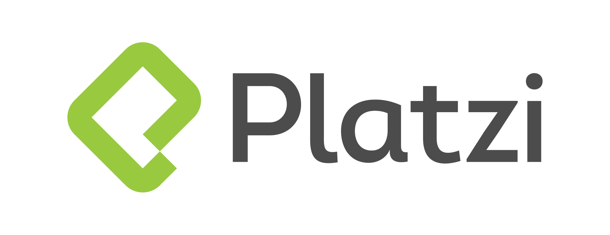

Educación
Analista en Sistemas de la Información
Universidad Autonoma de Entre Ríos
2016 - 2025

Desarrollador FullStack con PHP
EducacionIT
2020
JavaScript: Desde cero con NodeJS
Udemy
2023
React: De Cero a experto (Hooks y MERN)
Udemy
2023
Ingles - Nivel 4
Universidad Nacional de Entre Ríos
2024

Arquitecturas limpias para Desarrollo de Software
Platzi
2024
Inteligencia emocional y trabajo en equipo
Secretaria de Innovacion, Ciencia y Tecnología
2025
Teorias del liderazgo
Secretaria de Innovacion, Ciencia y Tecnología
2025